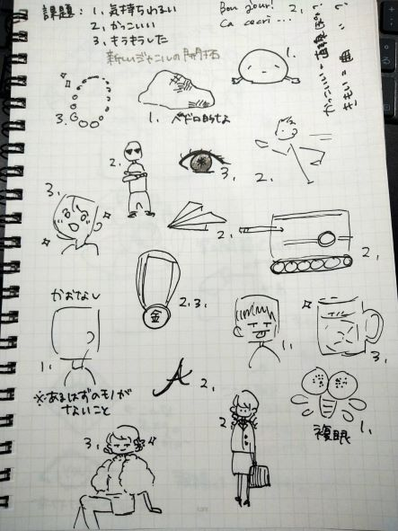
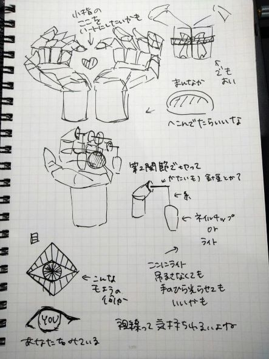

なんとなく今んとこの構想
テーマ：気持ち悪い、かっこいい、キラキラしている




授業中メモ
人によって感じ方、考え方は違って当たりまえ
たくさんエラーを起こすべき
→新しいものにチャレンジしてエラーを起こすとそこから適合が起こることが多い
今までにないようなアイデアを出す、違うもの生み出すという思考プロセス
今自分がぼやっと持っている新しい感情を言葉にして具現化するという目標に向かって課題をしてほしい
その思考プロセスを養ってほしい
制作期間は再来週までに伸びた(学園祭の準備のため)が、人の観察の課題(→特に丁寧にやること。のちの作業にまで影響する)が新しく出る